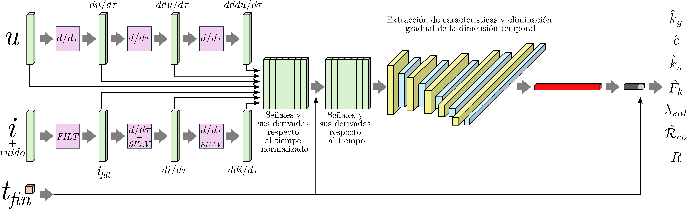
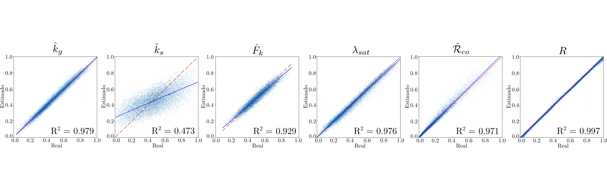

In this work, we present a neural network-based approach for the rapid and automated estimation of physical parameters in nonlinear systems, specifically focusing on low-cost electromechanical relays. Our method utilizes a combination of convolutional and dense layers to directly estimate the six parameters of a third-order nonlinear hybrid model from a single experimental test. By processing the entire experiment's data at once, our model eliminates the temporal dimension, making the estimation fast and suitable for industrial applications where automation is key. The results from our simulations, trained on 50,000 datasets, are promising, showing a high coefficient of determination (R²) for five of the six parameters, thus validating the feasibility of our approach. Future work will focus on improving the estimation of the less accurate parameter, k̂s, and incorporating experimental data from real devices.


This work has been developed in collaboration with the Research and Development Department on Induction Technology of BSH Home Appliances Group.